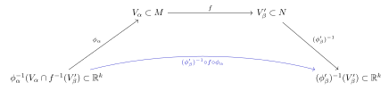

Information Geometry Chapter 00: Smooth Manifolds
Introduction
Welcome to the zero-zeroth chapter in my series on information geometry! This is the first of two posts in the information geometry series intended to provide (some of) the requisite background in differential geometry.
This first post is intended to be a very gentle and mostly self-contained, yet sufficiently abstract, introduction to the field of differential geometry, beginning with the notion of a smooth manifold, then moving on to define tangent bundles, vector fields, ending with a definition of Riemannian metrics.
For the most part, I will not delve too far into topology, differential or otherwise, and instead only introduce what is necessary to study information geometry. Since this is our ultimate goal, we will endeavour to keep things fairly abstract, since information geometry itself is a fairly abstract subject; specifically, it will be important to keep in mind, for this blog post and beyond, the following11 The idea here is similar to the following historical note (which I first read in Evan Chen’s Napkin) on group theory: there was a time when every group was viewed as a permutation group: this is Cayley’s Theorem. True though this may be, it is not always a useful perspective! Oftentimes it is better to think of a group as an abstract object in its own right, perhaps as a swirling blob with things colliding and floating around inside (this is sort of what my general picture of a group is).:
A manifold is an abstract object in its own right; it does not have to be thought of as a subset of any Euclidean space, and its points need not “feel like” points in Euclidean space.
Manifolds
In brief, a \(k\)-dimensional smooth manifold is any topological space that locally looks like \(\RR^k\). We begin by defining what it means to “locally look like” something else:
Definition. A \(k\)-dimensional smooth atlas for a topological space \(X\) is a collection of triples \((U_\alpha, V_\alpha, \phi_\alpha)\), each of which consists of:
an open subset \(U_\alpha\subset \RR^k\)
an open subset \(V_\alpha \subset X\)
a homeomorphism \(\phi_\alpha: U_\alpha\to V_\alpha\),
such that \(X = \bigcup_{\alpha} V_\alpha\), and all the maps \[\psi_{\alpha\beta} := \phi_\beta^{-1}\circ \phi_\alpha: \phi_\alpha^{-1}(V_\alpha\cap V_\beta)\to \phi_\beta^{-1}(V_\alpha\cap V_\beta)\] are smooth maps, viewed as maps from \(\RR^k\to \RR^k\). The triples \((U_\alpha, V_\alpha, \phi_\alpha)\) are called charts, and the \(\psi_{\alpha\beta}\) are called transition functions.
In fact, it is not hard to see that with the restricted domains written above, the \(\psi_{\alpha\beta}\) are not only smooth, they are smooth bijections whose inverses are also smooth. In other words, the \(\psi_{\alpha\beta}\) are diffeomorphisms.
Definition. A smooth manifold is a topological space \(M\) with a maximal22 In brief, maximal means that if we take any chart \((U_\gamma, V_\gamma, \psi_\gamma)\) such that the new transition functions we get involving \(\psi_\gamma\) are all still smooth, then \((U_\gamma, V_\gamma, \psi_\gamma)\) was already in the atlas; we cannot consistently add any new charts. \(k\)-dimensional smooth atlas.
Note also that not just any topological space will do: \(M\) must be both Hausdorff and second-countable, but this is unimportant for our purposes.
So, a manifold is any topological space \(M\), and the atlas allows us to assign each point \(p\in M\) to a point \(q\in \RR^k\). There may well be multiple ways to associate each open subset of \(M\) with a subset of \(\RR^k\), but smoothness of the transition functions ensures that we can interpolate between these associations smoothly. To develop an intuition for the theory, it will be useful to have several examples at our disposal. The first three are standard, and certainly “feel geometric”; the last is more abstract, but serves as the foundation for what we will study in later chapters.
Example (Open Subsets of \(\RR^k\)). Let \(U\subset \RR^k\) be an open subset. Then \(U\) is a \(k\)-dimensional smooth manifold: note that \(U\) is a topological space, for instance by inheriting the topological structure of \(\RR^k\) by way of the subspace topology. And, \(U\) can be covered in a single chart: \((U, U, \id)\), where \(\id\) denotes the identity map from \(\RR^k\) to itself.
Example (The \(1\)-Sphere, \(S^1\)). The \(1\)-sphere is also known as a circle. Certainly it is a topological space, naturally lying inside of \(\RR^2\) as the set \(S^1 := \{x\in\RR^2: \norm{x}=1\}\). If you zoom in enough, a circle looks like a line, i.e., an open subset of \(\RR\). One can parametrize it using four charts \(\phi_i: (0, \pi)\to S^1\), \(0\le i\le 3\), defined by \(\phi_i(t) = (\cos(t+\tfrac{i\pi}{2}), \sin(t+\tfrac{i\pi}{2}))\): it is easy to verify that the transition functions are diffeomorphisms, so this indeed makes the \(1\)-sphere into a \(1\)-dimensional smooth manifold. One could just have easily defined \(\phi_i(t) = (\cos(t+\tfrac{i\pi}{2} + \frac\pi6), \sin(t+\tfrac{i\pi}{2}+\frac\pi6))\), in which case we obtain a different coordinate system for \(S^1\): the way we represent points on the circle is different, but the underlying manifold \(S^1\) is identical.
Example (The \(2\)-Torus, \(\TT^2\)). There are many ways to construct the torus: it is often an illustrative exercise in differential topology to consider several constructions. One way is by parametrizing it, as we have done for \(S^1\) above. It can be defined as the image of \(h:\RR^2\to\RR^3\), \[(\theta,\phi) \mapsto [(2+\cos\theta)\cos\phi, (2+\cos\theta)\sin\phi, \sin\theta]\] Another way is by using a more general schema for constructing new smooth manifolds from old ones: the Cartesian product. If \(M\) and \(N\) are smooth manifolds of dimension \(m\) and \(n\), respectively, then \(M\times N\) is a smooth manifold of dimension \(m+n\), by taking the product of all pairs of charts in the respective atlases of \(M\) and \(N\). In our case, \(\TT^2\) can be realized as \(\TT^2\cong S^1\times S^1\).
Example (Statistical Manifolds). Without defining terms rigorously yet, a statistical manifold is a manifold \(M\) where every \(p\in M\) is a probability distribution over some other domain \(\Om\). An easy example is the space \(N\) of \(1\)-dimensional normal distributions. The coordinate systems we define on \(N\) correspond to parametrizations of families of normal distributions: one well-known parametrization is \(\phi(p) = (\mu(p), \sigma(p))\), mapping a distribution to its mean and standard deviation. Another is \(\phi'(p) = (\mu(p), \lambda(p))\), where \(\lambda(\cdot)\) is the precision of a distribution.
Just like before with \(S^1\), we can represent a normal distribution by multiple different parametrizations, i.e. by different coordinate systems on \(N\), but these are just different ways of viewing the same point: the underlying structure of \(N\) does not change.
The Tangent Bundle
Smooth Maps
Rather than merely thinking of an atlas as telling you how to use Euclidean coordinates to describe points on the manifold, one can also use the atlas to tell you which functions are smooth33 c.f. a topology isn’t only useful because it tells you which sets are open, but because it tells you which functions are continuous..

Now that we have a notion of smoothness, the next logical step is to define derivatives: it is always easier to study linear objects than non-linear ones.
Derivatives
Suppose \(M\) and \(N\) are smooth manifolds, and \(f:M\to N\) a smooth map. In order to “linearize” this relationship, we need to linearize two objects in parallel: the first is to linearize \(f\) itself–this will be its derivative \(df\); the second is to linearize the manifolds–this will be given by constructing the tangent space. Since linear maps are defined on vector spaces, this suggests that each tangent space should be a vector space. We start with the second. There are many ways to construct tangent spaces: a more rigorous treatment involves defining equivalence classes of smooth maps, and then introducing the notion of a derivation, which is essentially a linear map that satisfies a product rule property, and then defining the tangent space as the \(\RR\)-vector space of derivations at \(p\).
Definition. Let \(p\in M\) be any point and \((U,V,\phi)\) any chart with \(p\in V\). Then the tangent space of \(M\) at \(p\), denoted \(T_pM\), is the space of “velocity vectors” of curves on \(M\) through \(p\). Specifically, let \(\gamma: (-\eps,\eps)\to M\) be a smooth function with \(\gamma(0)=p\). Then \(T_pM\) is the set of derivatives \(\gamma'(0)\), where \(\gamma'(0) = (\phi^{-1}\circ\gamma)'(0)\in\RR^k\).
We will note, but not verify, that \(\gamma'(0)\) is independent of choice of chart. In short, it follows from the chain rule applied to \(\psi_{\alpha\beta}\). Note also that \(\phi^{-1}\circ\gamma\) is a smooth map from \(\RR\to\RR^k\), per the definition of smoothness of maps between manifolds introduced in the previous section, so in particular its derivative is well-defined and has the right dimension (\(T_pM\) should be a \(k\)-dimensional vector space if \(M\) is a \(k\)-dimensional manifold).
Example (Tangent Space of \(\RR^k\)). Let us compute \(T_0\RR^k\). \(\RR^k\) is a \(k\)-dimensional smooth manifold, and can be covered in a single chart \((\RR^k,\RR^k, \id)\). Since \(\id=\id^{-1}\), the set of tangent vectors at zero is simply the set of velocities of curves \(\gamma\) in \(\RR^k\) that pass through zero. In other words, \(T_0\RR^k = \RR^k\). If \(x_i\) denotes the curve \((0,\ldots, 0, t, 0, \ldots, 0)\), with \(t\) in the \(i\)th coordinate, then the derivatives at \(0\) of the \(x_i\), which we denote by \(\tfrac{\partial}{\partial x_i}\) form a basis of \(T_0\RR^k\).
The Tangent Bundle
Fixing a smooth map \(f\), one can think of \(df\) as a family of linear maps, parametrized by \(x\in \RR^k\), via \(x\mapsto df(x)\). The tangent bundle is conceptually similar: it is a family of vector spaces parametrized by points on the manifold. Visually, if we think of our manifold \(M\) as living inside some Euclidean space for a moment, the tangent bundle \(TM\) can be imagined as \(M\) with a copy of \(\RR^k\) glued to each point. Constructing it rigorously requires some care, so we take a more elementary approach and give the definition without the full construction.
Definition. Let \(M\) be a \(k\)-dimensional smooth manifold. Then its tangent bundle, denoted by \(TM\), is defined as \[TM := \bigsqcup_{p\in M} T_pM = \{(p,v) : p\in M,\ v\in T_pM\}.\] It also comes with a natural projection: \[\pi: TM \twoheadrightarrow M,\quad \pi(p,v) = p\]
It is not clear from the simple definition provided, but the point is that each open subset of \(TM\) locally looks like \(V\times \RR^k\), where \(V\subset M\) is an open subset of \(M\) covered by a chart from a maximal atlas.
Example. Let \(U\) be an open subset of \(\RR^k\), hence \(U\) is a \(k\)-dimensional smooth manifold in its own right. Then \(TU = U\times \RR^k\).
The projection map allows us to define vector fields on manifolds:
Definition. Let \(B\) be a topological space, and \(E\) any family of vector spaces parametrized by points in \(B\). A section of \(E\) is a map \(\sigma: B\to E\) such that \[\pi(\sigma(x)) = x \text{ for all } x\in B.\]
Definition. If \(M\) is a smooth manifold, a vector field on \(M\) is a smooth section \(X\) of \(TM\).
Here, smooth means that the vector that \(X\) returns at each point depends smoothly on the point in question: for instance, it does not return radically different vectors for two points \(p, p'\) that are “near” each other on \(M\).
Aside
Notice, also, that the definition for section that we gave is quite general: this will be useful to define a notion of distance on \(M\). Moreover, given a smooth manifold \(M\) with tangent bundle \(TM\), we can instead associate to each point \(p\in M\) the dual vector space, and in doing so we obtain:
Definition. If \(M\) is a smooth manifold, the cotangent bundle \(T^*M\) is defined by \[T^*M = \bigsqcup_{p\in M} (T_pM)^* = \{(p, f): p\in M,\ f\in (T_pM)^*\}\]
Definition. If \(M\) is a smooth manifold, a \(1\)-form on \(M\) is a smooth section \(\omega\) of \(T^*M\).
Distances
We are now finally ready to leave the world of differential topology and begin studying geometric properties of smooth manifolds. Everything that follows is founded upon having a suitable notion of distance. Additional commentary can be found here.
Definition. A Riemannian metric \(g\) is a family of symmetric positive-definite bilinear forms (inner products) on \(TM\), varying smoothly in \(p\).
Intuitively, a Riemannian metric gives us a way to measure lengths of tangent vectors, localized to each tangent space, and the “varying smoothly” condition guarantees that even if we move around \(M\), the lengths of vectors we get should not change drastically. However, this only gives a notion of length on each tangent space: the following definitions bridge the gap to defining distances on \(M\) itself.
Definition. Let \(a < b\) and \(\gamma:[a,b]\to M\) be a curve in \(M\). Then the length of \(\gamma\) is given by \[L(\gamma) = \int_a^b \sqrt{g_{\gamma(t)}(\gamma'(t), \gamma'(t))}\,dt.\]
The formula is relatively straightforward: parametrize the curve, then compute the speed of the curve in each tangent space, and then sum those up.
Example (Lengths of Curves in \(\RR^2\)). Let \(M=\RR^2\) and equip \(\RR^2\) with its usual Riemannian metric: namely, the constant Riemannian metric given by the standard Euclidean inner product at each point. Let \(a < b\) and \(\gamma = (x(t), y(t)): [a,b]\to\RR^2\) be a curve. Then the above formula gives us the familiar arc-length formula: \[L(\gamma) = \int_a^b \sqrt{x'(t)^2 + y'(t)^2}\,dt\]
Now that we can measure lengths of curves, an expression for distance reveals itself:
Definition. Let \(M\) be a connected smooth manifold, and \(p,q\in M\). Then we define the distance between \(p\) and \(q\) to be \[d(p,q) := \inf_\gamma L(\gamma),\] where the \(\inf\) is taken over all curves from \(p\) to \(q\).
The Fisher Metric
Definition
Everything we have done so far falls squarely under the purview of differential geometry; in this section, we finally begin discussing information geometry: think of it as a preview for what’s to come. We first introduce a crucial definition: that of the Fisher information metric.
Definition. Let \(M\) be a statistical manifold with coordinates \(\theta = (\theta^1,\ldots, \theta^k)\). Then, we write \(p(x|\theta)\) for the likelihood, i.e. the probability density of \(x\) under the distribution with parameters \(\theta\). The Fisher information metric is given by \[g_{ij}(\theta) = \EE_{x\sim p(x|\theta)}\left[\frac{\partial\log p(x|\theta)}{\partial\theta^i}\frac{\partial\log p(x|\theta)}{\partial\theta^j}\right].\]
In essence, it measures how sensitive the distribution is when adjusting each parameter by a tiny amount.
Gaussians
In this subsection, we compute the Fisher information metric for \(\mcn\), the collection of all one-dimensional normal distributions, which as mentioned, is a \(2\)-dimensional statistical manifold. Equip it with the single chart whose coordinates are mean \(\mu\) and standard deviation \(\sigma\), thus identifying \(\mcn\) with the upper half-plane.
Proposition. Let \(\mcn\) denote the space of one-dimensional Gaussian distributions, parametrized by mean \(\mu\) and standard deviation \(\sigma\). Then, the Fisher information metric is given by \[g = \frac{1}{\sigma^2}\begin{pmatrix}1&0\\0&2\end{pmatrix}. \text{ Equivalently, } ds^2 = \frac{d\mu^2 + 2d\sigma^2}{\sigma^2}\]
Our goal is to use the definition given above to compute the following: \[g_{\mu\mu} = g(\partial_\mu, \partial_\mu), \ g_{\mu\sigma} = g(\partial_\mu, \partial_\sigma) = g_{\sigma\mu} = g(\partial_\sigma, \partial_\mu), \nd g_{\sigma\sigma} = g(\partial_\sigma, \partial_\sigma).\] In our case, \(i,j\in \{1,2\}\) and \(\theta^1=\mu\), \(\theta^2=\sigma\). If \(\theta=(\mu,\sigma)\) is any normal distribution, we observe that \[\begin{align*} \log(p(x|\theta)) &= \log\left(\frac{1}{\sqrt{2\pi}\sigma}\exp\left(-\frac12 \left(\frac{x-\mu}{\sigma}\right)^2\right)\right)\\ &=\log\left(\frac{1}{\sqrt{2\pi}\sigma}\right) - \frac12\left(\frac{x-\mu}{\sigma}\right)^2 \end{align*}\] Now, we just compute the partials of this expression with respect to \(\mu\) and \(\sigma\). First, \[\frac{\partial\log p}{\partial\mu} = \frac{x-\mu}{\sigma^2}.\] Now with respect to \(\sigma\): \[\frac{\partial\log p}{\partial\sigma} = -\frac{1}{\sigma} + \frac{(x-\mu)^2}{\sigma^3}.\] Now, set \(z = \frac{x-\mu}{\sigma}\). If \(x\sim N(\mu,\sigma^2)\), then \(z\sim N(0,1)\). Then, we can write \[\frac{\partial\log p}{\partial\mu} = \sigma^{-1}z \nd \frac{\partial\log p}{\partial\sigma} = \sigma^{-1}(z^2-1).\] Now we can use the well-known first four moments of the standard Gaussian to compute each of the desired quantities in turn: \[\begin{align*} &g_{\mu\mu} = \EE[\sigma^{-2}z^2] = \sigma^{-2}\EE[z^2] = \sigma^{-2}\\ g_{\sigma\mu} = &g_{\mu\sigma} = \EE[\sigma^{-2}(z^3-z)] = \sigma^{-2}(\EE[z^3] - \EE[z]) = 0\\ &g_{\sigma\sigma} = \EE[\sigma^{-2}(z^4-2z^2+1)] = \sigma^{-2}(\EE[z^4] - 2\EE[z^2] + 1) = 2\sigma^{-2} \end{align*}\]
Let’s observe a couple things about this metric. First, recall that \(g\) allows us to define a notion of distance on \(\mcn\): in other words, a measure of how far apart two normal distributions are. How would we determine, qualitatively, how far apart two distributions are? One way is by continuously sampling points from the two distributions, and seeing how easily you can tell which distribution the samples came from. This is the notion of distance that \(g\) captures, locally.
The factor of \(1/\sigma^2\) says that shifting the mean of a wide Gaussian hardly changes it, whereas shifting the mean of a narrow Gaussian changes the distribution a lot. For instance, consider \(P_1 = N(0, 0.001^2)\) and \(P_2 = N(1, 0.001^2)\). It will be very obvious upon sampling a couple data points, that these two distributions are very different, since it is extremely unlikely to sample e.g. \(1\) from \(P_1\).
On the other hand, consider \(Q_1 = N(0, 100^2)\) and \(Q_2 = N(1, 100^2)\). It will be nearly impossible to tell the two apart, since the spread is so large that any point we sample from \(Q_1\) would not be surprising to have sampled from \(Q_2\), and vice versa.
Another observation is that \(g_{\sigma\sigma}=2g_{\mu\mu}\), so a change in the standard deviation by some amount changes the underlying Gaussian by more than the same change in the mean.
Gaussians and Hyperbolic Geometry
We conclude this section by revisiting a comment from earlier: that the space of one-dimensional Gaussians \(\mcn\) can be identified with the upper half-plane \(\HH^2\). It turns out that this identification is not just a topological one, but a geometric one: let \(u = \mu/\sqrt{2}\) be a re-scaling of the mean coordinate. Then we have \[ds^2 = 2\frac{du^2+d\sigma^2}{\sigma^2},\] which equals twice the hyperbolic metric on the upper half-plane. In other words, the space of Gaussians is a (rescaled) hyperbolic plane.
Looking Ahead
To recap, in this chapter, we established working definitions of manifolds and charts, which tell us how to represent abstract smooth spaces with coordinate systems. We introduced the tangent bundle as, essentially, a collection of vector spaces, one for each point on the manifold, each of which is a local linear approximation of the manifold. Finally, we equipped each tangent space with an inner product, a Riemannian metric, which gives a notion of distance on the manifold. In the case of statistical manifolds, the Fisher metric makes this distance a measure of statistical distinguishability.
So, we’ve done a lot. But there is still a major limitation, which is that we still don’t know how to relate tangent vectors based at different points. This leads us to the following questions:
How do we differentiate a vector field along a curve?
How do we tell whether a curve on \(M\) is “as straight as possible”?
We will answer these questions, and more, in the next post.
Notes
The idea here is similar to the following historical note (which I first read in Evan Chen’s Napkin) on group theory: there was a time when every group was viewed as a permutation group: this is Cayley’s Theorem. True though this may be, it is not always a useful perspective! Oftentimes it is better to think of a group as an abstract object in its own right, perhaps as a swirling blob with things colliding and floating around inside (this is sort of what my general picture of a group is). ↩︎
In brief, maximal means that if we take any chart \((U_\gamma, V_\gamma, \psi_\gamma)\) such that the new transition functions we get involving \(\psi_\gamma\) are all still smooth, then \((U_\gamma, V_\gamma, \psi_\gamma)\) was already in the atlas; we cannot consistently add any new charts. ↩︎
c.f. a topology isn’t only useful because it tells you which sets are open, but because it tells you which functions are continuous. ↩︎
References
- Notes on Differential Topology by Alexander Kupers , which do not seem to be uploaded.